# embedded architectures ## **Design of Autonomous Systems** ### csci 6907/4907-Section 86 ### Prof. **Sibin Mohan** --- ## what is an "embedded system"? --- ## what is an "embedded system"? - like autonomy, no _exact_ definition --- ## what is an "embedded system"? - like autonomy, no _exact_ definition - systems created for **specific functionality** --- ## what is an "embedded system"? - like autonomy, no _exact_ definition - systems created for **specific functionality** - fixed/operational for **years**, decades even! --- ## tradeoff between <div class="multicolumn"> <div> <br> <br> **performance** vs </div> </div> --- ## tradeoff between <div class="multicolumn"> <div> <br> <br> **performance** vs </div> <div> <ul> <li>power/battery life</li> </ul> </div> </div> --- ## tradeoff between <div class="multicolumn"> <div> <br> <br> **performance** vs </div> <div> <ul> <li>power/battery life</li> <li>less memory</li> </ul> </div> </div> --- ## tradeoff between <div class="multicolumn"> <div> <br> <br> **performance** vs </div> <div> <ul> <li>power/battery life</li> <li>less memory</li> <li>fewer peripherals</li> </ul> </div> </div> --- ## tradeoff between <div class="multicolumn"> <div> <br> <br> **performance** vs </div> <div> <ul> <li>power/battery life</li> <li>less memory</li> <li>fewer peripherals</li> <li>limited applications</li> </ul> </div> </div> --- ## tradeoff between <div class="multicolumn"> <div> <br> <br> **performance** vs </div> <div> <ul> <li>power/battery life</li> <li>less memory</li> <li>fewer peripherals</li> <li>limited applications</li> <li>smaller operating systems</li> <li><em>etc.</em></li> </ul> </div> </div> --- main reason? ## **predictability** --- ## predictability **guarantee** the system works, --- ## predictability **guarantee** the system works, - correctly - **safely** --- ## predictability **guarantee** the system works, - correctly - **safely** essentially → must be easy to **certify** the system --- ## the **wcet** problem --- ## the **wcet** problem "worst-case execution time" --- ## the **wcet** problem "worst-case execution time" > **longest** execution time for a program <br> --- ## the **wcet** problem "worst-case execution time" > **longest** execution time for a program <br> > on a **specific hardware platform** --- ## the **wcet** problem "worst-case execution time" > **longest** execution time for a program <br> > on a **specific hardware platform** must consider → **all possible inputs** --- ## wcet | used to ensure... - "_schedulability_" - resource requirements - performance limits of embedded and real-time programs --- ## wcet approaches lots of approaches to computing the WCET, _e.g.,_ - [dynamic/empirical](https://www.cs.fsu.edu/~whalley/papers/tecs07.pdf) → run program lots of times on the platform - [static](https://www.cs.fsu.edu/~whalley/papers/tecs07.pdf) → _compile time_ analysis to compute the _worst-case paths_ - [hybrid](https://sibin.github.io/papers/2008_NCSU-Dissertation_CheckerMode_SibinMohan.pdf) → a combination of the two - [probabilistic](https://people.ac.upc.edu/fcazorla/articles/jabella_ecrts2014_2.pdf) → combine dynamic analysis+statistical methods - [ML-based methods](https://dl.acm.org/doi/10.1145/3570361.3615740) → applying machine-learning to the problem --- ## so what's the "problem"? --- ## so what's the "problem"? at a high-level, the execution time distributions of applications: 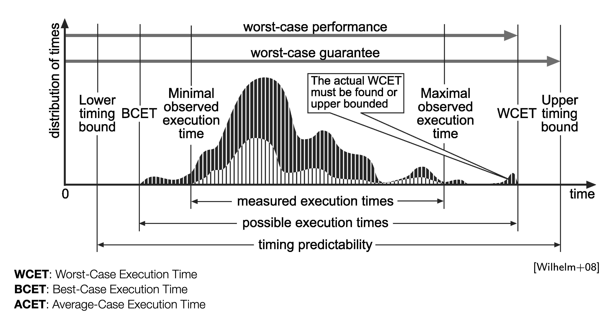 Note: we see that the various methods either underestimate or overestime the wcet. the former affects the safety, the latter wastes resources --- ### wcet analysis is a hard problem! structural problems (in hardware/software) make it more difficult! --- ## consider this example ```c void main() { int max = 10 ; int sum = 0; for( int i = 0 ; i < max ; ++i) sum += i ; } ``` --- ## consider this example ```c void main() { int max = 10 ; int sum = 0; for( int i = 0 ; i < max ; ++i) sum += i ; } ``` how do you compute the WCET for this code? --- ## need additional information --- ## need additional information first, define the **processor** it runs on → say, "**P**" --- ## need additional information first, define the **processor** it runs on → say, "**P**" - how long each instruction takes to execute on P --- ## need additional information first, define the **processor** it runs on → say, "**P**" - how long each instruction takes to execute on P - how many loop iterations? --- ## need additional information first, define the **processor** it runs on → say, "**P**" - how long each instruction takes to execute on P - how many loop iterations? - what is the startup/cleanup times for the program on P? --- ### adding in all that information, we have... ```c [1|3|4|5-6|7] void main() // startup cost = 100 cycles { int max = 15 ; // 10 cycles int sum = 0; // 10 cycles for( int i = 0 ; i < max ; ++i) // 5 cycles, once sum += i ; // 20 cycles each iteration } // cleanup cost = 120 cycles ``` --- ### to calculate the wcet ```c 1 void main() // startup cost = 100 cycles 2 { 3 int max = 15 ; // 10 cycles 4 int sum = 0; // 10 cycles 5 for( int i = 0 ; i < max ; ++i) // 5 cycles, once 6 sum += i ; // 20 cycles each iteration 7 } // cleanup cost = 120 cycles ``` $$ wcet = line_1 + line_3 + line_4 + line_5 + (line_6 * max) $$ --- ### to calculate the wcet ```c 1 void main() // startup cost = 100 cycles 2 { 3 int max = 15 ; // 10 cycles 4 int sum = 0; // 10 cycles 5 for( int i = 0 ; i < max ; ++i) // 5 cycles, once 6 sum += i ; // 20 cycles each iteration 7 } // cleanup cost = 120 cycles ``` $$ wcet = line_1 + line_3 + line_4 + line_5 + (line_6 * max) $$ which is fine for this simple example --- Now consider this slight change to the above code: ```c [3] void main( int argc, char* argv[] ) { int max = atoi( argv[1] ) ; // convert the command line arg to max int sum = 0; for( int i = 0 ; i < max ; ++i) // how many iterations? sum += i ; } ``` --- Now consider this slight change to the above code: ```c [3] void main( int argc, char* argv[] ) { int max = atoi( argv[1] ) ; // convert the command line arg to max int sum = 0; for( int i = 0 ; i < max ; ++i) // how many iterations? sum += i ; } ``` previous equation **fails**! --- Now consider this slight change to the above code: ```c [3] void main( int argc, char* argv[] ) { int max = atoi( argv[1] ) ; // convert the command line arg to max int sum = 0; for( int i = 0 ; i < max ; ++i) // how many iterations? sum += i ; } ``` previous equation **fails**! no longer know the value of `max` → arbitrary wcet! --- let's make another change to the code: ```c [1-6|10-16] #define VERY_LARGE_ARRAY+SIZE 1>>18 void main() { int first_array[VERY_LARGE_ARRAY_SIZE] ; int second_array[VERY_LARGE_ARRAY_SIZE] ; int sum_first = 0; int sum_second = 0; for( int i = 0 ; i < VERY_LARGE_ARRAY_SIZE * 2 ; ++i) { if( i%2 ) first_sum += first_array[i/2] ; else second_sum += second_array[(int)((i/2)+1)] ; } } ``` --- let's make another change to the code: ```c [10-16] #define VERY_LARGE_ARRAY+SIZE 1>>18 void main() { int first_array[VERY_LARGE_ARRAY_SIZE] ; int second_array[VERY_LARGE_ARRAY_SIZE] ; int sum_first = 0; int sum_second = 0; for( int i = 0 ; i < VERY_LARGE_ARRAY_SIZE * 2 ; ++i) { if( i%2 ) first_sum += first_array[i/2] ; else second_sum += second_array[(int)((i/2)+1)] ; } } ``` can we compute wcet easily (using previous equation)? **note:** maximum size of loop is known → `VERY_LARGE_ARRAY_SIZE * 2` Note: pause and ask students what, if anything can go wrong? --- ### let's see what happens in each iteration --- ### let's see what happens in each iteration | iter | operation | cache state | reason | |--------|----------------------------|-------------------|---------------------------------------------| | 1 | `first_array` loaded | miss | evicts whatever was previously in cache | --- ### let's see what happens in each iteration | iter | operation | cache state | reason | |----------------|----------------------------|-------------------|---------------------------------------------| | 1 | `first_array` loaded | miss | evicts whatever was previously in cache | | 2 | `second_array` loaded | miss | **evicts `first_array`** due to lack of space | --- ### let's see what happens in each iteration | iter | operation | cache state | reason | |----------------|----------------------------|-------------------|---------------------------------------------| | 1 | `first_array` loaded | miss | evicts whatever was previously in cache | | 2 | `second_array` loaded | miss | **evicts `first_array`** due to lack of space | | 3 | `first_array` loaded again | miss | **evicts `second_array`** due to lack of space | |...| || --- program will _constantly_ sufffer cache misses! --- program will _constantly_ sufffer cache misses! ### loop's execution time blows up! --- program will _constantly_ sufffer cache misses! ### loop's execution time blows up! <br> now we need to model → **cache behavior** for program/data --- ### further complications from other hardware features, _e.g.,_ - processor pipelining - prefetching - branch prediction - multithreading - multicore systems - memory buses - networks-on-chip - and too many others to recount here... --- processor feature → improves performance → *bad for wcet analysis*! --- processor feature → improves performance → *bad for wcet analysis*! ### embedded/real-time systems prefer **simpler** processors --- ## embedded processors come im myriad shapes and sizes: 1. Microcontrollers 2. Digital Signal Processors 3. Microprocessors 4. System-on-a-Chip 5. Embedded accelerators 6. ASICs and FPGAs --- so, we focus on: 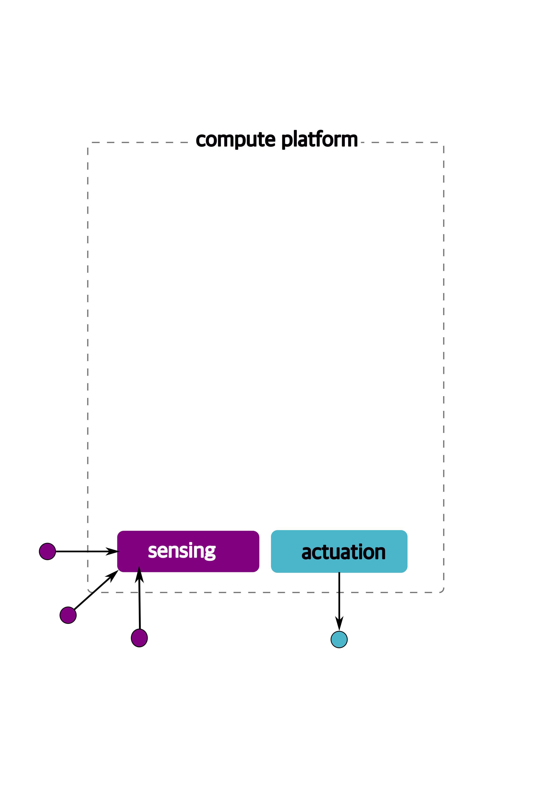 --- ## Microcontrollers --- ## Microcontrollers from [Wikipedia](https://en.wikipedia.org/wiki/Microcontroller), > "A microcontroller (MC, UC, or μC) or microcontroller unit (MCU) is a small computer <br> > on a single integrated circuit." --- ## Microcontrollers - most common type of "processors" in embedded systems - **[more than 55%](https://www.embedded.com/the-two-percent-solution/)** of the world's processors! --- ## Microcontrollers - most common type of "processors" in embedded systems - **[more than 55%](https://www.embedded.com/the-two-percent-solution/)** of the world's processors! - **small, yet critical**, systems --- ## Microcontrollers - most common type of "processors" in embedded systems - **[more than 55%](https://www.embedded.com/the-two-percent-solution/)** of the world's processors! - **small, yet critical**, systems - car engine control - implantable medical devices - thermal monitoring - millions (billions?) of other applications! --- ## microcontroller hardware features --- ## microcontroller hardware features | component | details | |-----------|---------| | one CPU core | typically simple `4` or `8` bit chips | --- ## microcontroller hardware features | component | details | |-----------|---------| | one CPU core | typically simple `4` or `8` bit chips | | small pipelined architectues | sometimes `2` or `4` stage pipelines | --- ## microcontroller hardware features | component | details | |-----------|---------| | one CPU core | typically simple `4` or `8` bit chips | | small pipelined architectues | sometimes `2` or `4` stage pipelines | | some limited memory | typically a few hundred kilobytes, perhaps in the form of EEPROMs or FLASH | --- ## microcontroller hardware features | component | details | |-----------|---------| | one CPU core | typically simple `4` or `8` bit chips | | small pipelined architectues | sometimes `2` or `4` stage pipelines | | some limited memory | typically a few hundred kilobytes, perhaps in the form of EEPROMs or FLASH | | programmable I/O | to interact with the real world | --- ## microcontroller hardware features [contd.] | component | details | |-----------|---------| | low operating frequencies | e.g., `4 KHz`; simpler/older processors, yet more predictable | --- ## microcontroller hardware features [contd.] | component | details | |-----------|---------| | low operating frequencies | e.g., `4 KHz`; simpler/older processors, yet more predictable | | low power consumption | in the **milliwatts** or **microwatts** ranges; might even be **nanowatts** when the system is _sleeping_ | --- ## microcontroller hardware features [contd.] | component | details | |-----------|---------| | low operating frequencies | e.g., `4 KHz`; simpler/older processors, yet more predictable | | low power consumption | in the **milliwatts** or **microwatts** ranges; might even be **nanowatts** when the system is _sleeping_ | | interrupts (some programmable) | often _real-time_ (ficed/low latency) | --- ## microcontroller hardware features [contd.] | component | details | |-----------|---------| | low operating frequencies | e.g., `4 KHz`; simpler/older processors, yet more predictable | | low power consumption | in the **milliwatts** or **microwatts** ranges; might even be **nanowatts** when the system is _sleeping_ | | interrupts (some programmable) | often _real-time_ (ficed/low latency) | | general-purpose I/O (GPIO) pins | for I/O | --- ## microcontroller hardware features [contd.] | component | details | |-----------|---------| | low operating frequencies | e.g., `4 KHz`; simpler/older processors, yet more predictable | | low power consumption | in the **milliwatts** or **microwatts** ranges; might even be **nanowatts** when the system is _sleeping_ | | interrupts (some programmable) | often _real-time_ (ficed/low latency) | | several general-purpose I/O (GPIO) pins | for I/O | | timers | e.g., a programmable interval timer (PIT) | || --- ### **Additional features** found on some microcontrollers: --- ### **Additional features** found on some microcontrollers: | component | details | |-----------|---------| | analog to digital (ADC) convertors | to convert incoming (real-world, sensor) data to a digital form that the uC can operate on | --- ### **Additional features** found on some microcontrollers: | component | details | |-----------|---------| | analog to digital (ADC) convertors | to convert incoming (real-world, sensor) data to a digital form that the uC can operate on | | digital-to-analog (DAC) convertor | to do the opposite, convert from digital to analog signals to send outputs in that form | --- ### **Additional features** found on some microcontrollers: | component | details | |-----------|---------| | analog to digital (ADC) convertors | to convert incoming (real-world, sensor) data to a digital form that the uC can operate on | | digital-to-analog (DAC) convertor | to do the opposite, convert from digital to analog signals to send outputs in that form | | universal async tx/rx (UART) | to receive/send data over a _serial_ line | --- ### **Additional features** [contd.]: | component | details | |-----------|---------| | pulse width modulation (PWM) | so that the CPU can control **motors** (significant for us in autonomous/automotive systems), power systems, resistive loads, etc. | --- ### **Additional features** found on some microcontrollers: | component | details | |-----------|---------| | pulse width modulation (PWM) | so that the CPU can control **motors** (significant for us in autonomous/automotive systems), power systems, resistive loads, etc. | | JTAG interace | debugging interface | || --- ### Microcontroller programs and data --- ### Microcontroller programs and data - are small → must fit in (limited) memory --- ### Microcontroller programs and data - are small → must fit in (limited) memory - often directly programmed in **assembly**! --- ### Microcontroller programs and data - are small → must fit in (limited) memory - often directly programmed in **assembly**! - assembly code might need _hand tuning_ Note: hand-tuning is for both, performance as well as fitting into the limited memory --- ### Microcontroller programs and data - are small → must fit in (limited) memory - often directly programmed in **assembly**! - assembly code might need _hand tuning_ - **C** is another popular language --- ### Microcontroller programs and data - are small → must fit in (limited) memory - often directly programmed in **assembly**! - assembly code might need _hand tuning_ - **C** is another popular language - **no operating systems** (or very rare)! --- ### Microcontroller programs and data - are small → must fit in (limited) memory - often directly programmed in **assembly**! - assembly code might need _hand tuning_ - **C** is another popular language - **no operating systems** (or very rare)! - sometimes use special-purpose programming languages/instructions --- ### popular microcontroller families: ||||| |----|----|----|----| |<center>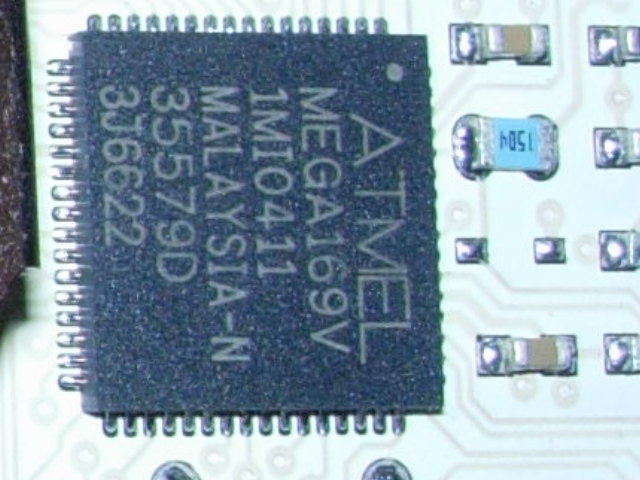<br>Atmel ATmega</center> | <center><img src="./img/embedded_arch/Microchip_PIC24HJ32GP202.jpg" height="100"><br>Microchip Technology</center> | <center>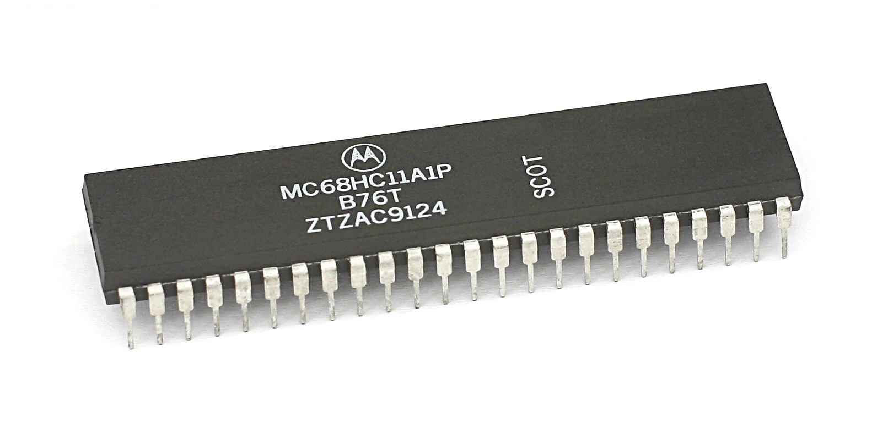<br>Motorola (Freescale)<br></center> | <center>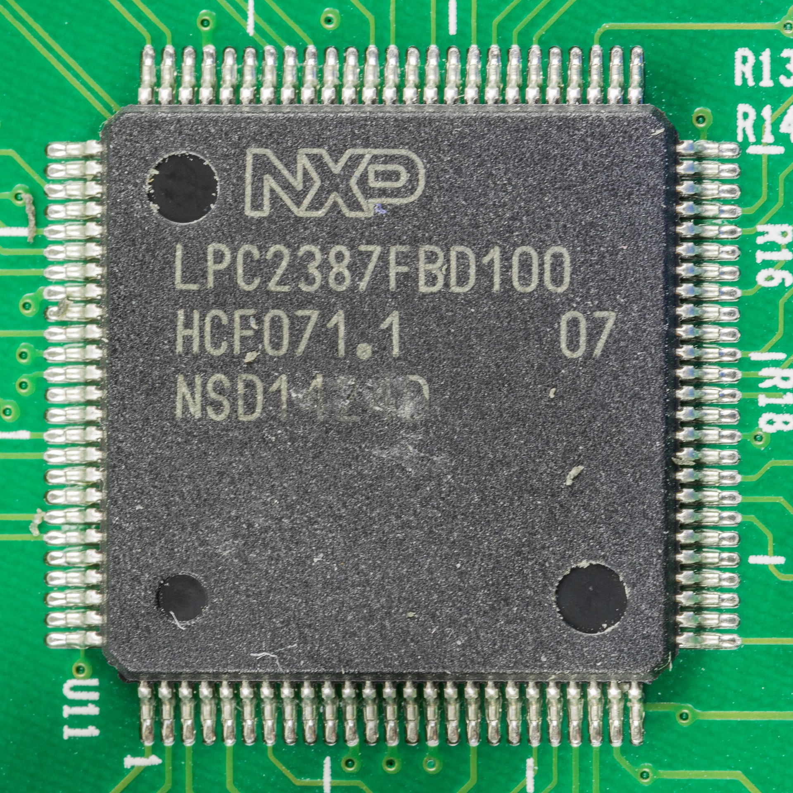<br>NXP</center> | || --- ## digital signal processor (dsp) --- ## what is a dsp? - specialized microcontrollers optimized for **digital signal processing** --- ## what is a dsp? - specialized microcontrollers optimized for digital signal processing - widely used in: - audio processing - radar and sonar - speech recognition systems - image processing - satellites - telecommunications - mobile phones - televisions --- ## main goals of dsps - **isolate**, **measure**, **compress**, filter analog signals in the real world - often have **stringent real-time constraints** --- ## example - texas instruments dsp chip, [tms320 series](https://www.ti.com/lit/ug/spruh79c/spruh79c.pdf?ts=1736945981001) - one of the most famous examples of dsp systems <br> 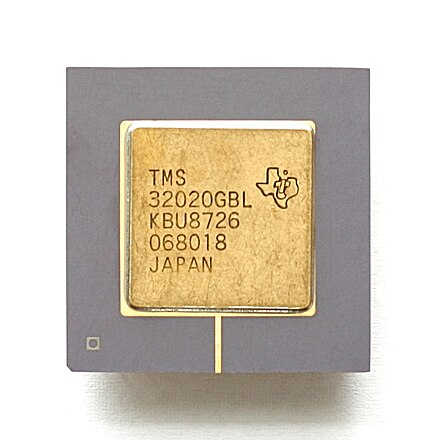 --- ## typical digital signal processing - **repetitive mathematical operations** - over a large number of samples - in real-time --- ## typical digital signal processing - **repetitive mathematical operations** - over a large number of samples - in real-time --- ## steps involved: - analog to digital conversion - manipulation (the core algorithm) - digital to analog conversion --- ## real-time constraints - entire process → completed with **low latency**, fixed deadline - low power requirements → battery-constrained devices --- ## software implementations exist - examples of software implementations: - [liquid sdr](https://liquidsdr.org) - matlab's [dsp system toolbox](https://www.mathworks.com/help/dsp/index.html) Note: hardware is faster, more predictable, low latency/jitter --- ## Typical DSP **architecture** 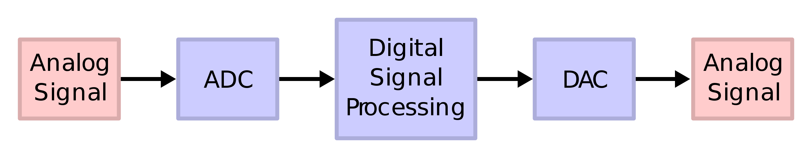 --- ## additional details --- ## additional details - custom instructions - _e.g.,_ `saturate`, `ed`, `multiply-and-accumulate` Note: caps the minimum or maximum value that can be held in a fixed-point representation, euclidian distance, a+b*c --- ## additional details - custom instructions - _e.g.,_ `saturate`, `ed`, `multiply-and-accumulate` - require **optimized memories and caches** --- ## additional details - custom instructions - _e.g.,_ `saturate`, `ed`, `multiply-and-accumulate` - require **optimized memories and caches** - code may need to be aware of, and **explicitly** manipulate caches --- ## additional details - custom instructions - _e.g.,_ `saturate`, `ed`, `multiply-and-accumulate` - require **optimized memories and caches** - code may need to be aware of, and **explicitly** manipulate caches - may have rudimentary OS but **no virtual memory** --- ## Microprocessors --- ## Microprocessors - **general-purpose** chips (as opposed to microcontrollers and DSPs) --- ## Microprocessors - **general-purpose** chips (as opposed to microcontrollers and DSPs) - more heavy duty computing/memory --- ## Microprocessors - **general-purpose** chips (as opposed to microcontrollers and DSPs) - more heavy duty computing/memory - more flexibility → programming and management of the system --- ## Microprocessors - **general-purpose** chips (as opposed to microcontrollers and DSPs) - more heavy duty computing/memory - more flexibility → programming and management of the system - commodity processor architectures (e.g,, ARM, Intel x86) --- ## Main features of microprocessors --- ## Main features of microprocessors | component | details | |-----------|---------| | cores | single or multicore; powerful | --- ## Main features of microprocessors | component | details | |-----------|---------| | cores | single or multicore; powerful | | pipelines | more complex pipelines; better performance, harder to analyze (e.g., wcet) | --- ## Main features of microprocessors | component | details | |-----------|---------| | cores | single or multicore; powerful | | pipelines | more complex pipelines; better performance, harder to analyze (e.g., wcet) | | clock speeds | higher clock speeds; `100s` of khz, or even GHz | --- ## Main features of microprocessors | component | details | |-----------|---------| | cores | single or multicore; powerful | | pipelines | more complex pipelines; better performance, harder to analyze (e.g., wcet) | | clock speeds | higher clock speeds; `100s` of khz, or even GHz | | ISA | common ISA; well understood, not custom | --- ## Main features [contd.] | component | details | |-----------|---------| | memory | significant memory; megabytes, even gigabytes | --- ## Main features [contd.] | component | details | |-----------|---------| | memory | significant memory; megabytes, even gigabytes | | cache hierarchies | multiple levels, optimized | --- ## Main features [contd.] | component | details | |-----------|---------| | memory | significant memory; megabytes, even gigabytes | | cache hierarchies | multiple levels, optimized | | power consumption | much higher, but can be reduced (e.g., via [voltage and frequency scaling](https://developer.arm.com/documentation/ddi0375/a/functional-overview/intelligent-energy-management--iem-/dynamic-voltage-scaling--dvs-)) | --- ## Main features [contd.] | component | details | |-----------|---------| | memory | significant memory; megabytes, even gigabytes | | cache hierarchies | multiple levels, optimized | | power consumption | much higher, but can be reduced (e.g., via [voltage and frequency scaling](https://developer.arm.com/documentation/ddi0375/a/functional-overview/intelligent-energy-management--iem-/dynamic-voltage-scaling--dvs-)) | | size, cost | often higher | --- ## Main features [contd.] | component | details | |-----------|---------| | interrupts, timers | more varied, easily programmable | --- ## Main features [contd.] | component | details | |-----------|---------| | interrupts, timers | more varied, easily programmable | | I/O | more interfaces, including commodity ones like USB | --- ## Main features [contd.] | component | details | |-----------|---------| | interrupts, timers | more varied, easily programmable | | I/O | more interfaces, including commodity ones like USB | | security | often includes additional hardware security features, e.g., [ARM TrustZone](https://sefcom.asu.edu/publications/trustzone-explained-cic2016.pdf). || --- ARM M-85 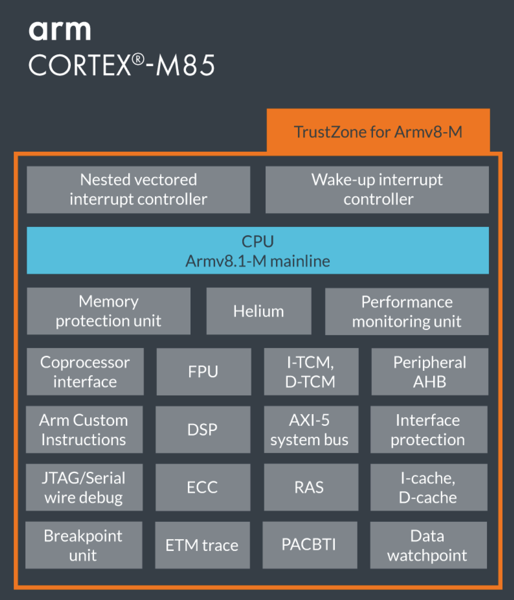 --- most microprpcessors **do not** include → DSPs, ADCs, DACs, etc. --- most microprpcessors **do not** include → DSPs, ADCs, DACs, etc. possible to _augment_ microprocessor → _connecting microcontrollers_! --- ## software → **most flexibility** --- ## software - **general purpose** OS (e.g., Linux, Android, Windows, UNIX, etc.) --- ## software - **general purpose** OS (e.g., Linux, Android, Windows, UNIX, etc.) - most programming languages and infrastructures (even Docker!) --- ## software - **general purpose** OS (e.g., Linux, Android, Windows, UNIX, etc.) - most programming languages and infrastructures (even Docker!) - large number of tooling, analysis, debugging capabilities --- ## software - **general purpose** OS (e.g., Linux, Android, Windows, UNIX, etc.) - most programming languages and infrastructures (even Docker!) - large number of tooling, analysis, debugging capabilities - complex code can run, but **increases analysis difficulty** --- ## System-on-a-Chip (SoC) --- ## System-on-a-Chip (SoC) **integrates** most components in/around a processor --- ## System-on-a-Chip (SoC) **integrates** most components in/around a processor → **single** circuit --- ## System-on-a-Chip (SoC) **integrates** most components in/around a processor → **single** circuit - processor/chip (microcontroller/microprocessor) --- ## System-on-a-Chip (SoC) **integrates** most components in/around a processor → **single** circuit - processor/chip (microcontroller/microprocessor) - memory and memory interfaces --- ## System-on-a-Chip (SoC) **integrates** most components in/around a processor → **single** circuit - processor/chip (microcontroller/microprocessor) - memory and memory interfaces - I/O devices --- ## System-on-a-Chip (SoC) **integrates** most components in/around a processor → **single** circuit - processor/chip (microcontroller/microprocessor) - memory and memory interfaces - I/O devices - buses → memory and I/O --- ## System-on-a-Chip (SoC) **integrates** most components in/around a processor → **single** circuit - processor/chip (microcontroller/microprocessor) - memory and memory interfaces - I/O devices - buses → memory and I/O - storage (e.g., flash) or secondary storage --- ## System-on-a-Chip (SoC) **integrates** most components in/around a processor → **single** circuit - processor/chip (microcontroller/microprocessor) - memory and memory interfaces - I/O devices - buses → memory and I/O - storage (e.g., flash) or secondary storage - radio modems --- ## System-on-a-Chip (SoC) **integrates** most components in/around a processor → **single** circuit - processor/chip (microcontroller/microprocessor) - memory and memory interfaces - I/O devices - buses → memory and I/O - storage (e.g., flash) or secondary storage - radio modems - (sometimes) accelerators such as GPUs --- all placed on a **single substrate** --- ### soc design --- ### soc design - often designed in `C++`, `MATLAB`, `SystemC`, etc. --- ### soc design - often designed in `C++`, `MATLAB`, `SystemC`, etc. - once the hardware architectures defined, --- ### soc design - often designed in `C++`, `MATLAB`, `SystemC`, etc. - once the hardware architectures defined, - additional elements → hardware description languages - e.g., register transfer levels (`RTL`) --- additional components could include, - DAC - ADC --- additional components could include, - DAC - ADC - radio/signal processing - wireless modems --- additional components could include, - DAC - ADC - radio/signal processing - wireless modems - _programmable logic_ --- additional components could include, - DAC - ADC - radio/signal processing - wireless modems - _programmable logic_ - networks on chip (NoC) --- examples of modern SoCs: <div class="multicolumn"> <div> <img src="./img/embedded_arch/broadcom_pi_chip.png" height="300" title="Broadcom SoC for Raspberry Pi"> Broadcom Soc from Raspberry Pi </div> <div> <img src="./img/embedded_arch/Apple_M1.jpg" height="300" title="Apple M1 SoC"> Apple M1 SoC </div> </div> --- ### side-effects of hardware integration --- ### side-effects of hardware integration | effect | benefit | problems | |----------|---------|----------| | tight integration | better performance, fewer latencies | cannot replace individual components | --- ### side-effects of hardware integration | effect | benefit | problems | |----------|---------|----------| | tight integration | better performance, fewer latencies | cannot replace individual components | | custom code/firmware | better use of hardware | not reusable in other systems | --- ### side-effects of hardware integration | effect | benefit | problems | |----------|---------|----------| | tight integration | better performance, fewer latencies | cannot replace individual components | | custom code/firmware | better use of hardware | not reusable in other systems | | custom sw libraries | easier programming | reduces code reusability in other systems | --- ### side-effects of hardware integration | effect | benefit | problems | |----------|---------|----------| | tight integration | better performance, fewer latencies | cannot replace individual components | | custom code/firmware | better use of hardware | not reusable in other systems | | custom sw libraries | easier programming | reduces code reusability in other systems | | low power consumption | better battery/heat | (potentially) slower | --- ## software stack --- ## software stack can vary → depends on SoC --- ## software stack can vary → depends on SoC - contemporary operating systems → optimized for SoC - e.g., Raspbian (a Linux variant) --- ## software stack can vary → depends on SoC - contemporary operating systems → optimized for SoC - e.g., Raspbian (a Linux variant) - common programming languages - e.g., `C`, `C++`, `python`, `java`, even `lisp`! --- ## embedded accelerators --- ## embedded accelerators **additional** circuitry to speed up certain functions --- ## embedded accelerators **additional** circuitry to speed up certain functions - idea → certain computation can be _offloaded_ --- ## embedded accelerators **additional** circuitry to speed up certain functions - idea → certain computation can be _offloaded_ - main CPU continues to process other code/requests --- ## embedded accelerators | examples - [GPUs](https://www.nvidia.com/en-us/autonomous-machines/embedded-systems/) - [AI-enabled silicon](https://www.nature.com/articles/s41928-022-00778-y) - [extra programmable FPGA fabric](https://www.amd.com/en/products/adaptive-socs-and-fpgas/soc/zynq-7000.html) - [security features](https://developer.arm.com/documentation/100230/0002/functional-description/external-coprocessors/configuring-which-coprocessors-are-included-in-secure-and-non-secure-states) - _etc._ --- ## embedded accelerators **specialized** for certain functions, _e.g.,_ - parallel matrix multiplications on GPUs - AES encryption - some chips include FPGA fabric → custom accelerators --- ## embedded accelerators NVidia Jetson Orin → AI/GPU focussed processor 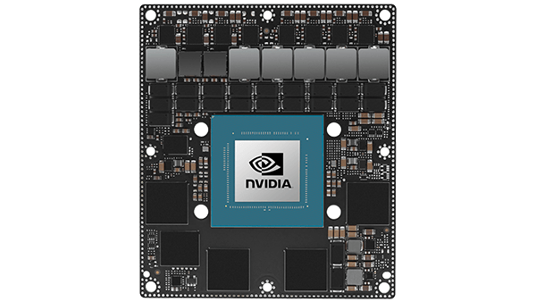 --- ## NVidia Jetson Orin | specs - 1300 MHz clock speeds - 64 GB Memory - 256 bit memory bus - 204 GB/s bandwidth - supports a variety of graphics features - DirectX, OpenGL, OpenCL, CUDA, Vulkan, Shader Models - maximum of 60W power - **275 trillion** operations/s (TOPS)! --- ## asic and fpga --- ## asic and fpga - Application-specific integrated circuits (ASICs) and - field programmable gate arrays (FPGAs) - semiconductor devices with **programmable logic gates** |asic|fpga| |----|----| |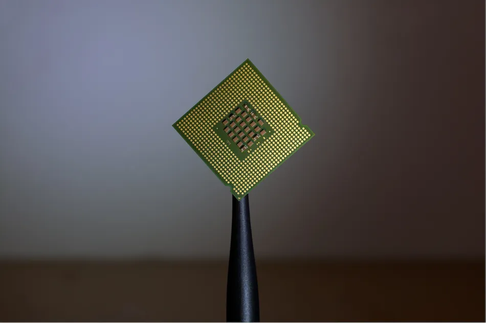| 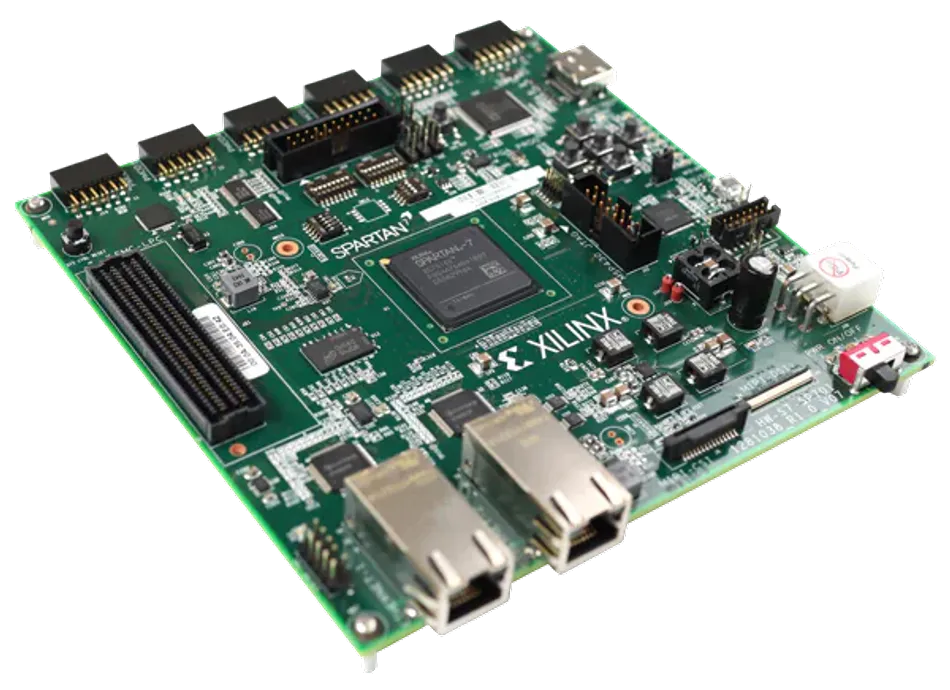| || --- ## asic and fpga read more from [online text](https://autonomy-course.github.io/textbook/autonomy-textbook.html#asics-and-fpgas)